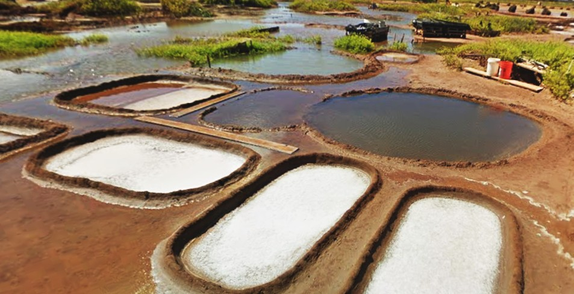

Hanapēpē Salt Ponds
Place: Hanapēpē Salt Ponds, Hanapēpē, Kauaʻi
Type: Traditional salt works / cultural landscape / National Historic Landmark
Story it tells: One of the last places in Hawaiʻi where Native Hawaiian families continue harvesting paʻakai using traditional methods passed down through generations.

The Hanapēpē Salt Ponds preserve one of Hawaiʻi's oldest continuously practiced traditions of making paʻakai (sea salt). For centuries, Native Hawaiian families have maintained this network of shallow clay-lined ponds by hand, harvesting salt using techniques passed down through generations. Today, the ponds remain one of the last places in the islands where Hawaiian sea salt is still produced through traditional methods.
The ponds rely on a remarkable blend of natural geology and engineering. Salt makers draw naturally filtered seawater from underground wells. The brine is carefully moved through a series of clay-lined basins where the sun and trade winds gradually evaporate the water, leaving behind crystallized sea salt. A rare local clay creates a waterproof lining that has helped the ponds function for many generations.
Paʻakai held tremendous importance in traditional Hawaiian society. Beyond seasoning food, it preserved fish and meat, served ceremonial purposes, and became an important trade commodity throughout the islands. The Hanapēpē ponds supplied salt for communities across Kauaʻi and played an especially important economic role during the reign of Chief Kaumualiʻi for trade with foreigners.
The ponds demonstrate the resilience of cultural stewardship. Hurricanes, floods, and storms periodically inundate the low-lying salt flats with fresh water, mud, and debris, ending an entire harvest season. The families, who have been stewards of the ponds for generations, manually rebuild the clay basins, clean the wells, and restore the entire system using traditional methods.
Because of their exceptional cultural significance, the Hanapēpē Salt Ponds have been designated a National Historic Landmark. Today they are both a working cultural landscape and a living tradition, preserving knowledge that has survived for centuries in the face of natural disasters and the transformation of Kauaʻi's coastline.
Just inland, the historic town of Hanapēpē grew into one of Kauaʻi's most important commercial centers, while the nearby salt ponds continued a tradition that long predates the plantation era. Together they illustrate how Native Hawaiian practices and later communities became intertwined across the landscape.